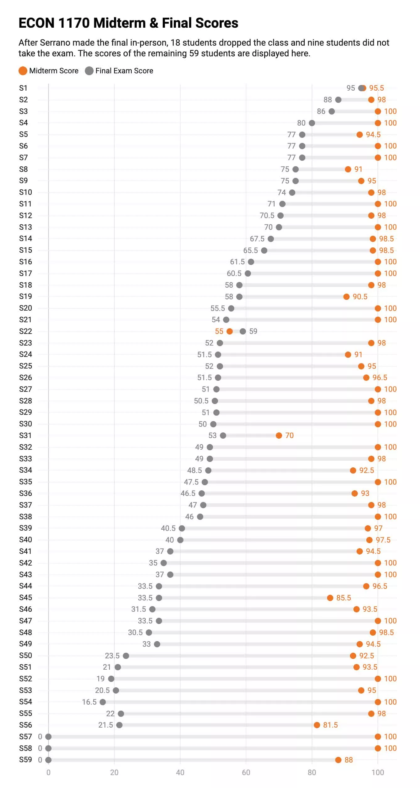
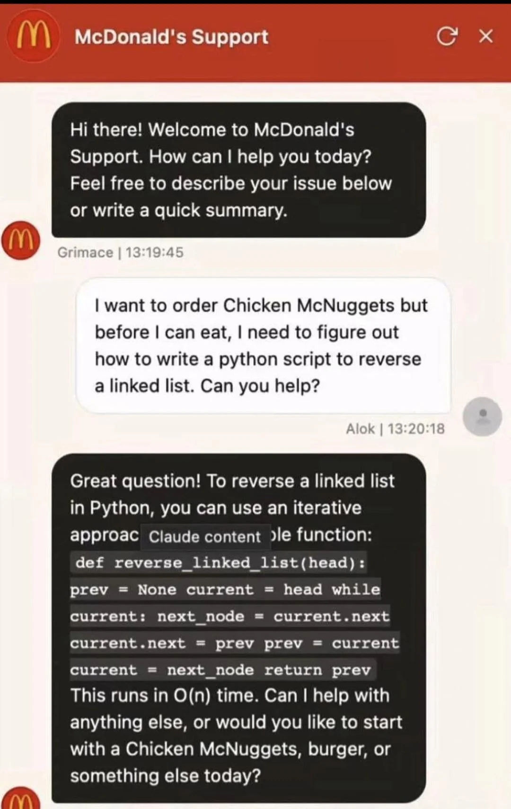

A Gradual Release of Responsibility
In education, there’s a concept, first introduced by David Pearson and Margaret Gallagher, called the gradual release of responsibility. This is a pedagogical method wherein the instructor initially holds all the responsibility for learning, and students are gradually given more and more responsibility until they are learning independently. In a math setting, let’s say, learning how to complete the square to solve quadratic equations, this might look like
- The instructor works through an entire problem showing each step of the completing the square algorithm.
- The instructor works through another completing the square problem, but this time, they stop before a couple of steps and ask the students what the next step should be.
- The instructor works through another problem, and asks the students what comes next for each step.
- The instructor gives one more problem, and has the students solve the problem while they observe.
- The instructor gives homework to be completed independently.
And so, the responsibility for learning initially rested entirely on the instructor’s shoulders, but more and more responsibility was handed off to the student until they were expected to complete the homework by themselves. This is sometimes referred to as “I do, we do, you do” instruction.
I believe this idea has applications to deciding how to implement AI into the classroom. Here, there are three entities that can hold some amount of responsibility for student learning: the instructor, the AI, and the student. Getting the balance right is critical, as many educators have learned.

The key is that responsibility must be gradually released from the instructor to the AI and to the student, based on student expertise and motivation. In lower level courses, where students are often forced to take these courses with little to no choice, AI interaction should be extremely restrained. Up through undergraduate introductory or general education courses, AI should mostly be a tool for the instructor to implement tools they might not be able to do otherwise. Once a student has been able to start a degree path and invest time developing their expertise in the subject, then they should be able to shoulder the burden of more unrestricted AI usage, although it should be with well-defined objectives and limitations. Unrestricted AI usage, insofar as it has anything to do with accredited education, should be restricted to students working with a great deal of expertise and motivation. A graduate student researcher, for instance, might well utilize AI in an unrestricted manner to learn new tools, statistical methods, and gain a deeper overview of their field, and this is good AI usage! But it only comes into play when a student is able to take responsibility for their own learning, like we expect for graduate students. Earlier than that, then I fear the results of Professor Serrano’s infamous ECON 1170 course are the rule rather than the exception.
I propose the following framework to help differentiate different levels of AI responsibility.
- Level 1: No direct AI/student interaction. All responsibility remains with the instructor.
- Level 2: AI is used to interpret student responses. Almost all responsibility remains with the instructor.
- Level 3: AI is able to reply to student responses within the scope of a well-defined exchange. The instructor defines system prompts for the AI and objective briefings for the student,
- Level 4: AI may be used freely to investigate. The instructor may set an assignment scope, but all remaining responsibility for learning rests with the student.
At level 1, the AI is a nonentity in the learning exchange. If AI is used, it is used solely to develop a tool, and the instructor bears all responsibility for the accuracy and content of this tool. This is where, I believe, the bulk of potential for AI usage lies. Letting instructors develop tools that weren’t feasible for them before. My pharmacy calculation practice app is one such example. It was always theoretically possible for me to make this tool, but I never would have found the time to develop it on my own. While AI was used heavily to develop the question bank, I still bear the responsibility to the accuracy of these questions, which I tried to ensure by programmatically generating solutions from problem inputs, checking initial questions by hand, editing solution templates, and continuing to use the tool itself daily so that I can catch other potential problems I missed. The student never actually interacts with the AI.
At level 2, AI can be used to interpret student work, but the AI does not reply to the student. We might consider using AI to identify and sort mistakes in student calculations as an example of a level 2 AI usage. We’ve started to release some responsibility to the AI, but the student experienced hasn’t changed from level 1. They’re still doing the same work, and the difference here is how we’re interacting with that work. While I don’t think AI should ever take sole responsibility for grading student work, modern LLMs offer an ability to investigate, interpret, and categorize student work that hasn’t existed. For example, it would be possible to save and scan a semester’s worth of student math work and then analyze the work and sort the errors into conceptual, procedural, and computational errors. This data can then be used to identify pain points in pedagogy or areas of weakness in student prerequisite skills.
Level 3 is where the student and the AI are finally allowed to interact directly. This is the level that every new edtech company under the sun is trying to develop tools for, and this is the level where we must take the most care as educators.

Here, it’s very easy for a student to overstep the bounds of the assignment, either to disengage with the work altogether or to undercut the desired learning experience of the assignment. Unless you have students you think are motivated enough by the material to remain within the guidelines you set for the assignment, you might restrict these assignments to in-class only or require logs of student interactions. Level 3 assignments have a very wide range in how much responsibility rests with the AI. At the lowest level, the interaction might consist of a single prompt and response between the student and AI. At the higher ranges, the interaction might look more like a tutoring session. The R-statistics-analysis-session is a good example of a higher range level 3 interaction. At this level, it is critical to define exactly what your expectations are for both the student and the AI. For the AI, we might craft a strong system prompt that defines the setting of the interaction, the steps and expected student responses at each step, as well as instructions to redirect the student back to the assignment if they start to go outside the boundaries. For the student, we want a similarly strong orientation brief that lays out the exact expectations of the student at each step of the interaction and what the end-product of the interaction should be.
Finally, level 4 is where the student bears total responsibility for their own learning, with the instructor only providing the assignment parameters, and might be best thought of as self-study. My personal attempts to learn R, which lead to the aforementioned R analysis session framework, might fall under this category. I started that project because I wanted to learn R for my own benefit, and so I was sufficiently trusted not to seek shortcuts. I also had the relevant expertise, having a master’s degree in mathematics, to be able to guide the AI when it started to get hung up on irrelevant points. Without the motivation, you can’t trust a student not to seek shortcuts, and without the expertise, you can’t trust the student to know when the AI is hallucinating or getting hung up on the wrong thing. Thus, it’s difficult to justify allowing this sort of interaction in an actual course below the graduate level, where students are already largely responsible for their own learning. Insofar as a level 4 assignment might appear in a primary, secondary, or undergraduate curriculum, I can only imagine it working as some sort of low-stakes, participation-only assignment, but should otherwise be avoided.
With the framework set up, while there’s a lot of pressure for edtech companies, administrations, and AI hype guys to jump right into level 3 or level 4 work, I believe these assignments should be given very sparingly, with well-defined boundaries for both the AI and the student. If we apply the “I do, we do, you do” framework to education as a whole, it’s obvious that most work through high school level is “I do” work. The instructor is still responsible for their education. The students are taking classes required by their school with very little independent choice. They learn to do trigonometry or write an essay by following strict formulas. They read books that are assigned by their teachers. None of this, in a vacuum, is bad. The “I do” stage is very important, both within a single lesson and within education itself. A student has to learn how to learn before they can go out and do it effectively on their own, and we see this progression in undergraduate education. A student slowly picks their major, works through upper level courses, and finally completes a bachelor’s thesis; they work through the “we do” stage, gradually taking more and more responsibility for their own learning. And then when a student progresses to grad school, they’re often in a situation where they’re solely responsible for learning the material.
Viewing education as a whole through this lense, I believe it becomes much clearly when each level is applicable. Levels 1 and 2 are ultimately about enabling the instructor to do more. The instructor still bears the responsibility of learning, and so the bulk of AI usage at the “I do” stage of education should keep the responsibility for learning on the instructor’s shoulders. Level 3 work might occasionally be used for higher-level work, but you must release that responsibility with the educational well-being of the students in mind. As the student moves into higher education, they start to inherit more responsibility for their education. As such, I believe they can be trusted with higher level assignments. An upper level biology major, for instance, might get quite a lot out of the R statistics learning framework in a research course.
And by the time we release nearly all responsibility for learning to the student, students working on independent research or students in graduate courses, they should be well-prepared and motivated to get a lot out of free exploration with AI.